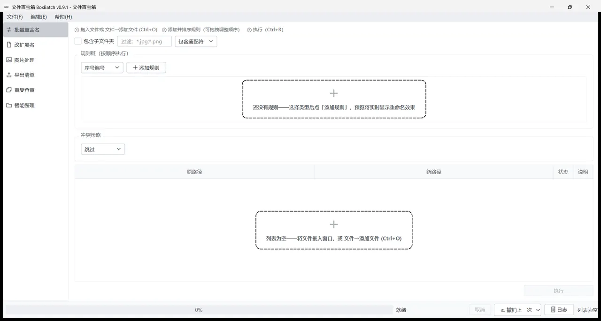

文件百宝箱
BoxBatch · 文件百宝箱.exe
纯本地、绿色免安装、全中文的 Windows 批量文件处理工具。

这是什么
文件百宝箱是一款在你自己电脑上完成批量文件处理的 Windows 工具，四个页面各管一类活：批量重命名、图片批量处理、重复文件查重、文件夹智能整理。
它把「改之前先看会发生什么」放在执行前面：页面下半部分是一张影响预览表，逐行列出原名、新名字和状态，执行按钮上的数字只算真的会写盘的条目。删除一律进系统回收站，批量操作可撤销。
下载渠道
下载后解压即用，不需要装运行库；软件全程在本机运行，文件不上传。
怎么用
安装
- 拿到压缩包后解压到任意文件夹，例如
D:\工具\文件百宝箱。 - 解压出来的文件夹里有一个「文件百宝箱.exe」，双击即可使用，无需安装。
- 若杀毒软件对未签名的 exe 弹出提示，请先核对来源，再决定是否放行；软件本身不需要联网，也不写系统目录。
启动
- 双击【文件百宝箱.exe】。
- 启动后看到主界面，窗口标题上写着版本号，左侧是四个功能入口，右侧是当前页面的工作区。
- 第一次启动会在程序所在目录下生成一个
BoxBatch文件夹，用来存设置、运行日志和撤销记录；整个文件夹拷走，设置跟着走。
功能详解
公共操作：范围、预览、执行、撤销
这个功能做什么：四个页面的操作骨架一致——先确定处理范围，再设参数，看影响预览，最后执行。学会一套，四个页面都能用。
操作步骤：
- 在页面顶部的范围条上点【添加文件】或【添加文件夹】，也可以用菜单【文件】→【添加文件】（Ctrl+O）/【添加文件夹】（Ctrl+D），或把文件直接拖进窗口；【粘贴】（Ctrl+V）支持一次粘多行路径。
- 范围条会显示「N 个文件 / M 个文件夹」，右侧的【来源(N)】列出你加过的每个目录，鼠标停上去能看到该目录是否包含子文件夹，点 × 可单独移除这个来源。
- 需要连同子文件夹一起处理时，勾上【包含子文件夹】，然后按 F5 重新扫描。
- 在下半部分的影响预览表里核对每一行：参与勾选、原名称、新名称（变动的那几个字符会高亮）、位置、状态、说明；表头分隔线可以拖动改列宽。
- 预览顶部有一行汇总，写清「将改动 / 不变 / 冲突 / 跳过 / 失败」，右边的下拉框可切【只看将改动】或【只看问题】，把大部分行先藏起来。
- 确认无误后点【执行（……）】按钮或按 Ctrl+R；执行中想停就按 Esc；改坏了按 Ctrl+Z 撤销上一次，点它右边的小箭头能挑更早的记录。
- 列表要清理时，用范围条的【移除】/【清空】或菜单【编辑】，也可以在预览表上右键：移除选中、打开所在文件夹、从磁盘删除（进回收站）、复制完整路径。
操作后你会看到：状态列逐行写出「变更 / 不变 / 冲突 / 跳过 / 失败」，汇总行的「将改动」和按钮上的数字是同一个数；执行完成后状态列变成完成态，状态栏右下角提示结果。
批量重命名
这个功能做什么：把一批文件按同一套规则改名，规则可以叠加，顺序能拖动调整。
操作步骤：
- 在批量重命名页的范围条上添加文件或文件夹（添加文件夹只把里面的文件拉进来）。
- 在【规则链（拖拽排序，按顺序执行）】区选一个类型，点【添加规则】，可加多条；规则行左侧的序号就是执行顺序，拖住行首可以换位置。
- 七种规则按需要填参数：序号编号（起始、步长、位数、放在前缀/后缀/指定位置，可勾「按文件夹重置」）、查找替换（区分大小写、全字匹配，替换框留空就是删除）、正则替换（如把
微信图片_(\d{4})(\d{2})(\d{2})_\d+换成${1}-${2}-${3}）、插入前后缀、删除字符（只留前 N 个和后 M 个字符）、大小写转换、自定义模板（可用${name} ${ext} ${seq:3} ${date:%Y%m%d} ${parent}这些占位符）。 - 需要统一扩展名时在【输出选项】里填目标扩展名，选大小写，必要时勾【去多重后缀】把
raw.jpg.jpg修回raw.jpg；想在改名之前先按扩展名筛一遍，就用「仅这些 / 除这些外」的白黑名单。 - 在【冲突】里选跳过后怎么办：跳过、自动加序号或覆盖（覆盖会在执行前再问一次）。
- 核对影响预览，点【执行（改动 N 项）】。
操作后你会看到：预览表的「新名称」列逐行给出结果，只有状态为「变更」的行才算进按钮数字；执行完成后文件名已改，位置没动。
图片批量处理
这个功能做什么：一次处理一批图片，缩小、压体积、转格式、加水印都能在同一页做完，默认输出到新目录，原图不动。
操作步骤：
- 添加图片；影响预览里非图片文件会被标成「失败」且勾不上，不会混进任务。
- 选【处理目标】：缩小尺寸、压缩体积、转格式、加水印，或【高级】一次看全参数。
- 缩小尺寸选最长边、按宽度、按高度或百分比，默认勾着【小于目标尺寸不放大】；压缩体积调 JPG 质量、PNG 级别、WebP 质量，也可以勾「压到目标体积内」按 KB 数自动压。
- 转格式选 JPG / PNG / WebP / BMP / TIFF；透明图转 JPG 或 BMP 时，用「背景色」填充透明区域。
- 加水印可写文字（调字号、颜色）或选一张 PNG 当 Logo，位置用九宫格选，再调边距与透明度。
- 在右侧的【输出目录与命名】区选输出目录、填命名模板（默认
${name}${ext}）；输出目录留空时，结果会放在原图所在目录下的「文件百宝箱输出」文件夹，需要时勾【保留 EXIF】。 - 核对影响预览里的「预计输出」体积，点【执行（处理 N 张）】。
操作后你会看到：预览表给出输出文件名与状态，底部写着「预计输出：约 X MB → 约 Y MB」；执行完成后新文件出现在输出目录里，原图仍在原处。
重复文件查重
这个功能做什么：从一堆文件里找出真正重复的副本，只删多余的，保留哪一份由你定。
操作步骤：
- 添加文件夹，在【待比对清单】里取消掉这次不想参与的文件。
- 选【模式】：内容重复（大小、抽样、全量逐字节比对，内容完全一致才算重复）或仅按文件名（文件名相同即一组）。
- 需要收窄范围时展开【更多筛选】，填最小 / 最大体积、扩展名包含或排除；筛选收起后仍按当前值生效。
- 选【保留规则】：保留最新修改或保留最早修改。
- 点【开始扫描】，在结果区按组勾选要删的文件——淡蓝色的【保留】行勾不上，想换保留项就切换保留规则。
- 点【删除选中进回收站(N)】。
操作后你会看到：扫描后一行摘要「已扫描 N 个 · 发现 G 组重复（K 个）· 未重复 M 个」；结果区按组列出，组标题写着这一组能释放多少空间；删除后这些文件在系统回收站里，也可以用 Ctrl+Z 复原。
文件夹智能整理
这个功能做什么：把散在一个文件夹里的文件，按类型或日期分到子目录里，文件本身的名字不变。
操作步骤：
- 添加要整理的文件，在【输出根目录】填或点【浏览】选一个存放位置（建议选一个空目录，便于核对）。
- 选【整理依据】：按类型（图片 / 视频 / 音频 / 文档 / 压缩包 / 程序，其余进「其他」）、按日期、按 EXIF 日期，或自定义表。
- 选按日期时，再选用【按年】/【按年-月】/【按年-月-日】的粒度。
- 用自定义表时，在表格里一行行填「扩展名 → 目标子目录」，末行填完会自动补一行新的。
- 选【移动】还是【复制】，【冲突】选跳过、自动加序号或覆盖；勾【递归子目录】带上子文件夹里的文件。
- 核对影响预览，点【执行（整理 N 项）】。
操作后你会看到：预览表列出参与的文件与状态，执行后文件按依据出现在输出根目录的子文件夹里，名字没变；勾了【移动完成后删除空文件夹】的话，原来的空目录会被清掉。
设置与维护
这个功能做什么：调撤销记录保留多少条、图片处理的默认参数，以及打开日志与配置位置。
操作步骤：
- 按 Ctrl+, 或用菜单【文件】→【设置】打开设置窗口。
- 在【常规】调【撤销保留（条）】；在【图片】决定是否【允许覆盖原图】、是否【保留 EXIF】、默认 JPG 质量；在【高级】决定要不要处理隐藏与系统文件。
- 需要看日志或找配置文件时，进【维护】：【打开配置目录】会打开程序目录下的
BoxBatch文件夹，里面有设置、日志和撤销记录；【导出日志】另存一份已脱敏的日志。 - 点【保存】生效，想还原就点【恢复默认】。
操作后你会看到：设置窗口关闭，新参数立即对下一次预览生效；状态栏右侧的【日志】按钮可以展开实时日志面板。
运行环境
| 项目 | 要求 |
|---|---|
| 操作系统 | Windows 10 或 Windows 11，64 位 |
| 磁盘 | 解压后约 40 MB；处理大文件时另需目标位置的可用空间 |
| 权限 | 普通用户即可，不需要管理员权限；建议放在你有写权限的目录（如 D 盘自建文件夹） |
常见问题
- 添加了文件夹，为什么列表里看不到文件夹本身？
-
原因：文件夹只作为「来源」记录，软件只会把里面的文件加入处理范围，所以预览表里不会出现目录行。
解决：看范围条右侧的【来源(N)】，点开能看到加了哪些目录；不需要某个目录就点它的 × 移除。
- 执行按钮上的数字为什么比列表条数少？
-
原因：按钮数字只统计真的会写盘的条目，「不变」「冲突」「跳过」「失败」都不算。比如改名规则没改动某个文件，它就不进这个数。
解决：把过滤切到【只看将改动】核对一遍，剩下的行才是这次真正会被改的。
- 「统一扩展名」和图片页的「转格式」有什么区别？
-
原因：统一扩展名只改文件名的后缀字符，文件内容还是原样；转格式会重新编码图片内容。
解决：只是名字后缀乱（如一堆
.jpeg），用重命名页的统一扩展名；真要把 JPEG 转成 PNG，用图片处理页的转格式。 - 图片处理输出到原目录，会覆盖我的原图吗？
-
原因：目标名和原图不一样时直接执行；同名目标会自动加编号；只有勾了【允许覆盖原图】并且真的同名，执行前才会再确认一次。
解决：想彻底不动原图，就把输出目录设成另一个文件夹，这是默认思路。
- 删掉的文件去哪了？还能找回来吗？
-
原因：软件里所有删除都进 Windows 回收站，不进回收站的删除没有。
解决：先在回收站还原；也可以按 Ctrl+Z 撤销上一次，点它右边的箭头挑更早的记录。撤销记录能保留多少条，取决于设置里的【撤销保留（条）】。
- 智能整理的预览里为什么看不到目标子目录？
-
原因：整理不改名，预览表的「新名称」列显示的是文件名；子目录是按整理依据在输出根目录下生成的。
解决：执行前确认【输出根目录】和「整理依据」选对了，执行后到根目录下按依据核对结果；先拿少量文件试一遍更稳妥。
- 正则替换写错了会改坏文件吗？
-
原因：正则写错时输入框会标红提示，预览也不会给出新名字，不会带着错误规则执行。
解决：按提示改对再执行；已经执行错了就按 Ctrl+Z 撤销。
- 一次加几千个文件，预览会不会很卡？
-
原因：预览是逐行算的，本机实测 300 个文件出预览约几十毫秒、执行不到 1 秒，几千个文件会慢一些但仍在可接受范围。
解决：文件特别多时先按扩展名筛一遍再处理，必要时分几批执行。
注意事项
- 只支持 Windows 10/11 64 位，没有 macOS 版。
- 「批量重命名」只改名不挪目录，「智能整理」只挪目录不改名，两件事别指望一个页面干完。
- 撤销记录有保留条数上限，超出上限的旧记录翻不到；重要操作前建议先小范围试跑。
- 全程在本地处理，不联网、不上传；处理时注意目标磁盘的剩余空间，尤其是图片与大文件批量复制。
- 软件未附带开源许可协议，请勿二次分发或打包进其他产品售卖。
其它叫法与搜索词
也有人叫它批量重命名、去重、整理文件夹。
英文名 BoxBatch，
程序名 文件百宝箱.exe。
想找这类工具时常见的说法：纯本地、绿色免安装、所有批量操作可撤销、图片默认输出到新目录、全程不联网、不上传、批量重命名、改扩展名、图片批量处理、文件名清单导出、重复文件查重、文件夹智能整理。